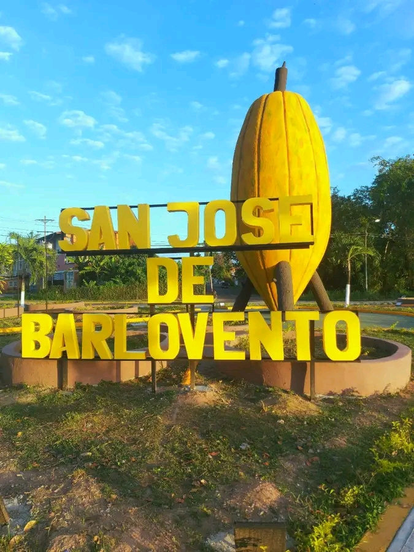

San José de Barlovento está ubicado en el estado Miranda, Venezuela. Forma parte de la región de Barlovento, reconocida por su clima tropical y paisajes exuberantes.
San José de Barlovento tiene raíces profundas en la historia afrovenezolana. Fue fundado por comunidades descendientes de africanos esclavizados, que conservaron sus tradiciones, creencias y formas de organización social.
La cultura de San José de Barlovento es rica en expresiones musicales, especialmente el tambor barloventeño. Las festividades religiosas, como las de San Juan y San José, son celebradas con danzas, cantos y rituales que reflejan la identidad afrodescendiente.